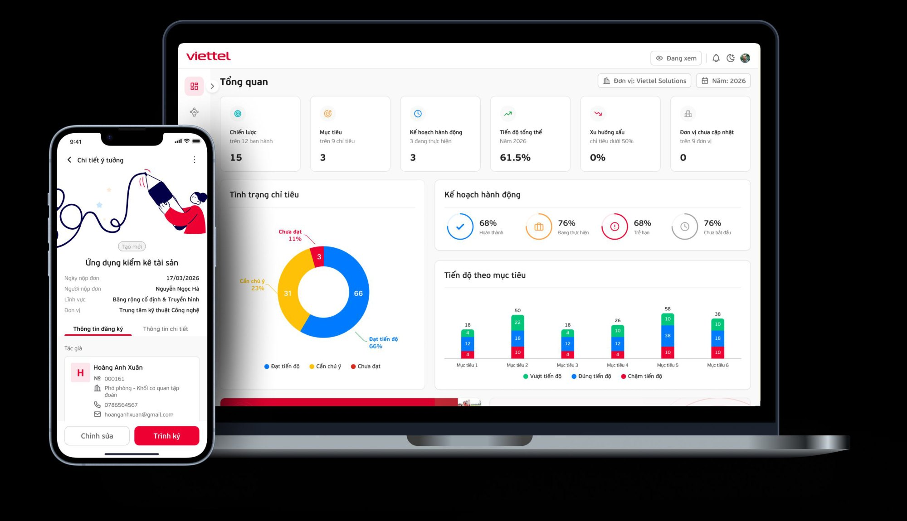
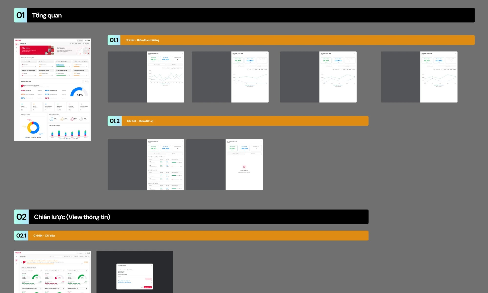
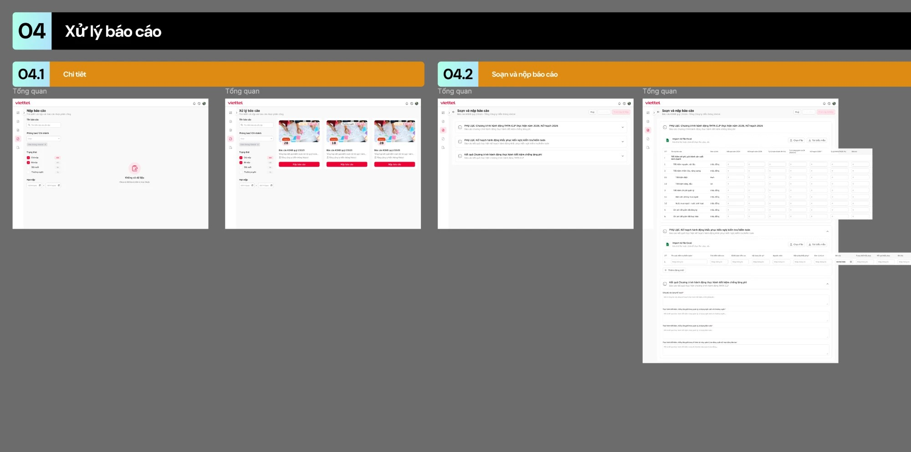
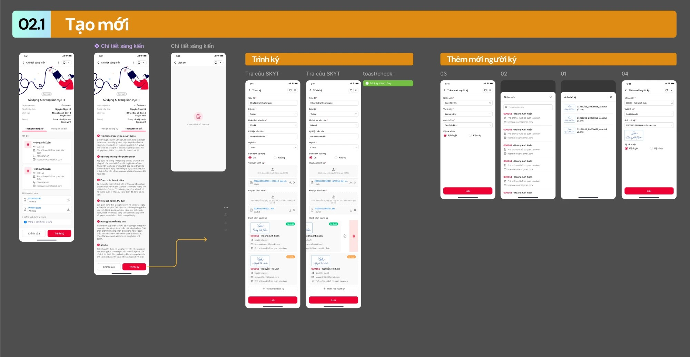
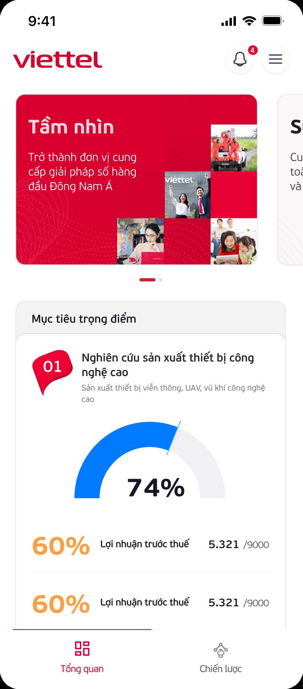

Viettel

Transforming bold ideas into meaningful experiences — giao diện giúp mọi người, từ nhân viên đến lãnh đạo, thao tác tự tin và rõ ràng.Transforming bold ideas into meaningful experiences — interfaces that let everyone, from frontline staff to senior management, act with confidence and clarity.
01 — Dự án01 — ProjectsBốn nền tảng, một ngôn ngữ thiết kếFour platforms, one design language
Mình tư vấn và thiết kế giao diện cho các quy trình vận hành dày đặc, đảm bảo tuân thủ Branding và Design System của Viettel, đồng thời chuẩn hoá UI components để tích hợp tốt với giao diện đang triển khai.
I crafted interfaces that translate dense, process-heavy operations into clear, intuitive experiences — compliant with Viettel’s branding and Design System, with standardised UI components that integrate with existing interfaces.
Innovation Management
Nền tảng nộp và duyệt sáng kiến — mọi nhân viên đều có thể đóng góp, theo dõi và quản lý ý tưởng.
An internal platform that streamlines innovation submission and approval — making it easy for every employee to contribute, track and manage ideas.
Strategic Planning
Biến mục tiêu cấp tập đoàn thành workflow rõ ràng, có thể theo dõi.
Translates high-level corporate goals into clear, trackable workflows.
Internal Control
Kiểm soát nội bộ: quy trình audit, giám sát rủi ro, báo cáo tuân thủ.
Built for compliance and precision — audit workflows, risk monitoring and regulatory reporting.
Miniapp Đặt cơmFood Ordering Miniapp
Mini app tiện ích đặt cơm cho nhân viên.
A mini app for employees to order meals.
02 — Viettel Monitor02 — Viettel MonitorKế hoạch — Chiến lược trên một màn hìnhPlans and strategy on one screen
Nền tảng giúp lãnh đạo và các đơn vị theo dõi mục tiêu chiến lược của tập đoàn:
- Tổng quan — tầm nhìn, sứ mệnh, tiến độ các chỉ tiêu trọng điểm, mục tiêu trọng điểm (% hoàn thành), tình trạng chỉ tiêu và kế hoạch hành động.
- Chi tiết chỉ tiêu — so sánh kế hoạch với thực hiện, xem biểu đồ xu hướng theo tháng / quý / năm hoặc theo đơn vị, có trạng thái trống khi chưa có dữ liệu.
- Chiến lược — xem thông tin từng chỉ tiêu và cập nhật kết quả qua popup.
A platform for leaders and units to track the group’s strategic goals:
- Overview — vision, mission, progress on key indicators, key goals (% complete), indicator status and action plans.
- Indicator detail — plan versus actual, with a trend chart by month / quarter / year or by unit, plus an empty state when there’s no data.
- Strategy — view each indicator and update results through a dialog.

03 — Kiểm soát nội bộ03 — Internal ControlTừ danh sách báo cáo đến nộp báo cáoFrom report list to submission
Luồng Xử lý báo cáo kiểm soát nội bộ (KSNB) cho các phòng ban, chi nhánh:
- Danh sách báo cáo — lọc theo tên báo cáo, phòng ban/chi nhánh, trạng thái (chờ nộp, đã nộp, đề xuất, thường xuyên) và hạn nộp; mỗi kỳ báo cáo là một thẻ kèm số ngày còn lại.
- Soạn và nộp báo cáo — các phụ lục được nhóm thành khối có thể thu gọn; dữ liệu bảng nhập trực tiếp hoặc import từ file Excel theo biểu mẫu tải sẵn; phần kết quả nhập dạng văn bản.
The Internal Control report processing flow for departments and branches:
- Report list — filter by report name, department/branch, status (pending, submitted, proposed, recurring) and deadline; each reporting period is a card showing days remaining.
- Compose & submit — appendices grouped into collapsible blocks; table data entered inline or imported from Excel using a downloadable template; results captured as text.

04 — Sáng kiến — Ý tưởng04 — Initiative & IdeaĐăng ký sáng kiến ngay trên điện thoạiRegister an initiative from your phone
Ứng dụng mobile giúp nhân viên tạo mới sáng kiến và đưa vào luồng phê duyệt:
- Chi tiết sáng kiến — thông tin đăng ký (tác giả, lĩnh vực, đơn vị, tài liệu đính kèm) và thông tin chi tiết (tình trạng trước khi áp dụng, nội dung đề nghị, phạm vi áp dụng, hiệu quả dự kiến, hướng phát triển).
- Trình ký — điền thông tin văn bản, đính kèm văn bản trình ký và phụ lục, tra cứu sáng kiến; xác nhận bằng toast thành công.
- Thêm người ký — chọn nhân viên, vai trò ký, ảnh chữ ký và hình thức ký duyệt / ký nháy.
A mobile app that lets employees create an initiative and send it for approval:
- Initiative detail — registration info (authors, field, unit, attachments) and full detail (current state, proposal, scope, expected impact, next steps).
- Submit for signing — document details, signing documents and appendices attached, initiative lookup; confirmed with a success toast.
- Add signers — pick an employee, signing role, signature image and type: approval / initial signature.

05 — Color & Typography05 — Color & TypographyNền tảng thị giác chungA shared visual foundation
Các nền tảng dùng chung một bộ màu và typography, tuân thủ branding Viettel:
- Surface trung tính Default / Secondary / Tertiary; đỏ thương hiệu với Default, Secondary (gradient) và Tertiary cho nền nhạt.
- Màu ngữ nghĩa Blue, Green, Orange, mỗi màu có 3 cấp Default / Secondary / Tertiary.
- Màu chuyên biệt cho Calendar/Live, Calendar/Plan và AI suggestion.
- Typography dùng SF Pro Display với 5 kiểu chữ.
The platforms share one colour and typography set, compliant with Viettel’s branding:
- Neutral surfaces Default / Secondary / Tertiary; brand red with Default, Secondary (gradient) and a light Tertiary.
- Semantic Blue, Green, Orange, each in Default / Secondary / Tertiary.
- Dedicated colours for Calendar/Live, Calendar/Plan and AI suggestion.
- Typography uses SF Pro Display with 5 styles.
Color
Typography — SF Pro Display
Semibold
Regular
Regular
Medium
Regular
Hiển thị bằng SF Pro trên thiết bị Apple; thiết bị khác dùng font hệ thống tương đương.Rendered in SF Pro on Apple devices; other devices use the closest system font.
06 — Responsive06 — ResponsiveTừ dashboard desktop đến màn hình điện thoạiFrom desktop dashboard to phone screen
Trang Tổng quan của Viettel Monitor được thiết kế để tự sắp xếp lại (reflow) khi chuyển từ màn hình lớn sang điện thoại, thay vì thu nhỏ nguyên bố cục:
- Điều hướng: sidebar bên trái chuyển thành bottom tab bar (Tổng quan, Chiến lược) trong tầm ngón cái; header rút gọn còn thông báo và menu.
- Tầm nhìn & Sứ mệnh: từ hai thẻ đặt cạnh nhau thành carousel vuốt ngang có chỉ báo trang.
- Mục tiêu trọng điểm: lưới chỉ số 2 cột và gauge bên phải dồn thành 1 cột, gauge đưa lên đầu để thấy ngay mức hoàn thành.
Đường kẻ tím đánh dấu bề rộng desktop.
The Viettel Monitor overview is designed to reflow from a large screen to a phone rather than simply shrinking the layout:
- Navigation: the left sidebar becomes a bottom tab bar (Overview, Strategy) within thumb reach; the header slims down to notifications and menu.
- Vision & mission: two side-by-side cards become a swipeable carousel with a page indicator.
- Key goals: the two-column metric grid and side gauge reflow into one column, with the gauge on top so progress is visible first.
The purple line marks the desktop width.


- Tầm nhìn / Sứ mệnh thành carousel vuốt ngangVision / mission become a swipeable carousel
- Chỉ số 2 cột thành 1 cột, gauge lên đầuTwo-column metrics reflow into one; gauge moves on top
- Sidebar thành bottom tab barSidebar becomes a bottom tab bar